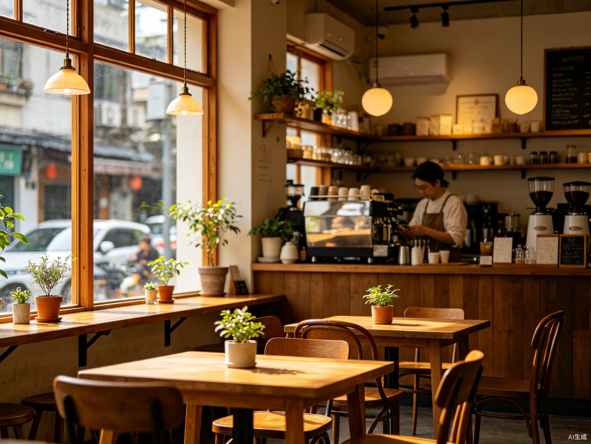

桐邻
TONGLIN
First 120 Minutes · 社区融入路线设计
Community Integration Route Design
中 / EN
评委模式 / Judge Mode
桐邻 First 120 Minutes
Your Two-Hour Community Integration Route
为刚到成都桐梓林的中外居民，生成一条包含社区地点、活动、文化提示和社交行动的两小时融入路线。
A two-hour integration route for new Chinese and international residents of Chengdu Tongzilin — places, events, cultural tips, and social actions.
个性化路线
Personalized Route
真实社区地点
Real Community Places
双语全程支持
Bilingual Support
120 分钟闭环
120-Minute Loop

交互流程
Interaction Flow
桐邻
First 120 Minutes
两小时社区融入路线
桐梓林 · TONGZILIN
开始生成路线
选择偏好
1 / 4
Choose Your Preferences
中文 / EN
咖啡 Café
90 分钟
独自 Solo
已选 2 / 4SELECTED
下一步
你的路线
120 min
Your Route
桐梓林
桐邻咖啡
Tonglin Café
15m
社区公园
Community Park
25m
1 / 4 进行中
路线完成
Route Completed
120 min · 4 stops
桐邻 · TONGLIN